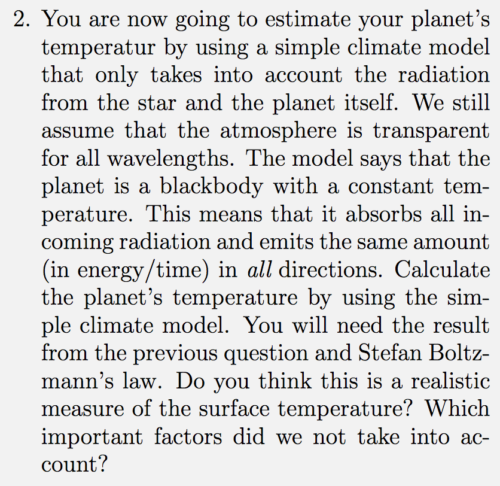

Forrige side🙂 🙁
Fluks og luminositet
Siste deloppgave av 1D.4: 
Du skal igjen kun diskutere fremgangsmåten, ikke nødvendigvis løse oppgaven med tall nå.
Husk at for en planet å være i likevekt med stabil temperatur så må den motta like mye energi som den sender ut.
Du kommer du igjen til å trenge Stefan-Boltzmanns low, F =σT4 der σ er et tall og T er temperaturen til legemet. Stefan-Boltzmanns lov gjelder kun for sorte legemer (forklaring senere), vi skal her anta at Saturn er et sort legeme.
Ikke gå videre før du har tenkt godt gjennom hva du kan gjøre. Hvis du ikke får det til, få hjelp av en gruppelærer! Neste side